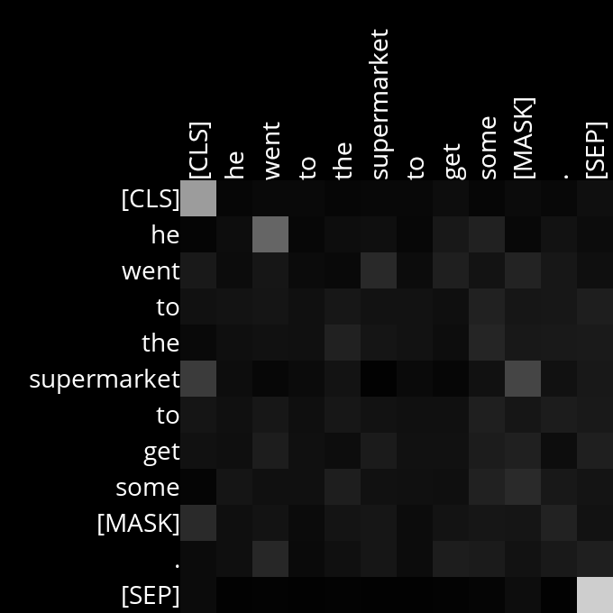
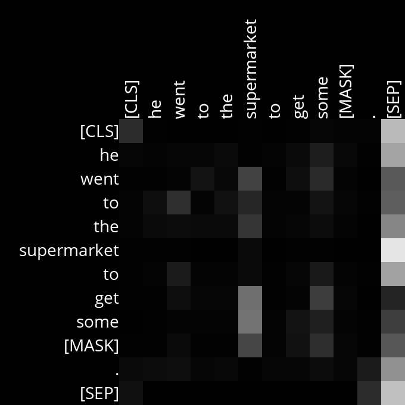
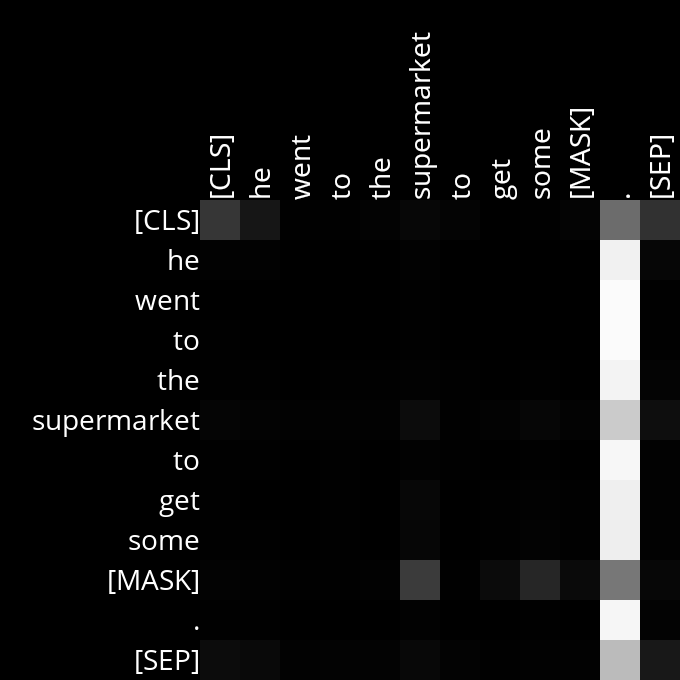
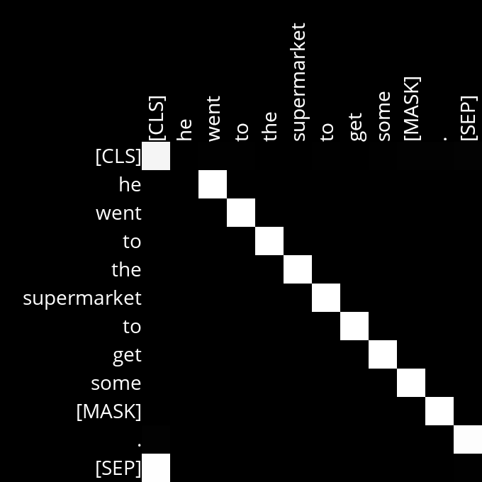
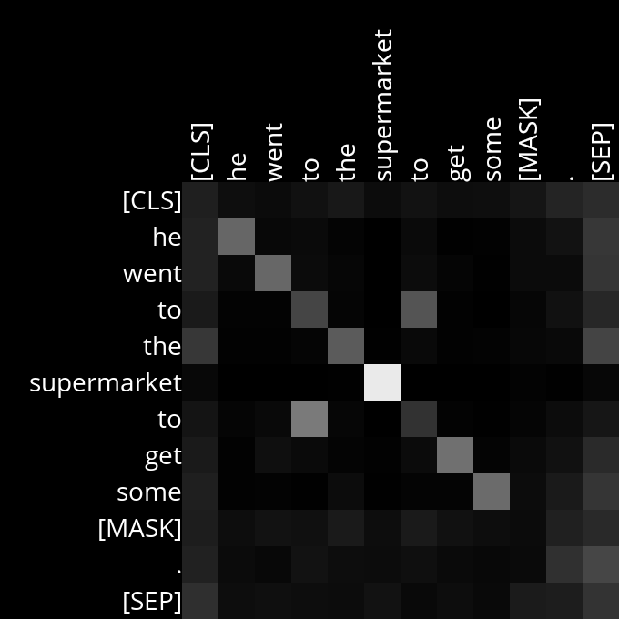
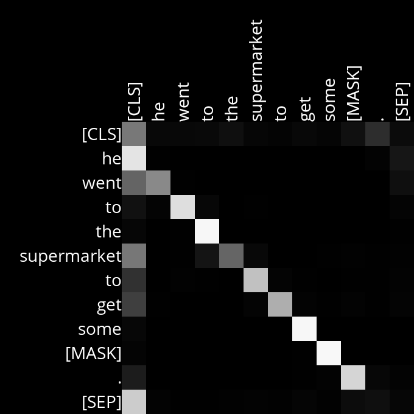

Code
# Import the required modules
import os
import sys
import torch
from PIL import Image, ImageDraw, ImageFont
from transformers import BertTokenizer, BertForMaskedLMBERT (Bidirectional Encoder Representations from Transformers) is a pre-trained transformer-based model designed for various NLP tasks, including masked language modeling. In masked language modeling, BERT predicts missing or masked words within a text sequence by leveraging the surrounding context. The transformer architecture it uses consists of multiple layers of self-attention mechanisms and feedforward neural networks, which enable it to understand and model complex language patterns. The base BERT model contains 12 transformer layers (also known as transformer blocks), each with 12 self-attention heads, totaling 144 self-attention heads across the model.
In this project, we will:
Use the pre-trained BERT base model to predict masked words in a text sequence and generate diagrams that visualize attention scores.
Analyze these diagrams to understand what BERT’s attention heads might be focusing on as it processes natural language.
We will utilize the transformers library from Hugging Face, which provides pre-trained models and tokenizers for a variety of NLP tasks. Specifically, BertTokenizer is used to convert text into tokens that the BERT model can process, while BertForMaskedLM is the version of BERT specialized for masked language modeling.
# Pre-trained masked language model
MODEL = "bert-base-uncased"
# Number of predictions to generate
K = 3
# Constants for generating attention diagrams
FONT_PATH = "OpenSans-Regular.ttf"
GRID_SIZE = 40
PIXELS_PER_WORD = 200
# Load the font
try:
FONT = ImageFont.truetype(FONT_PATH, 28)
except IOError:
print(f"Font not found at {FONT_PATH}. Loading default font")
FONT = ImageFont.load_default()We are using the bert-base-uncased version of BERT, where all text is converted to lowercase before tokenization, meaning no distinction is made between uppercase and lowercase letters. The constant K represents the number of top predictions the model should return for a masked word. This involves ranking potential words that could replace the [MASK] token and selecting the top K candidates.
main() functiondef main(text, viz_attentions = False):
# Tokenize input
tokenizer = BertTokenizer.from_pretrained(MODEL)
inputs = tokenizer(text, return_tensors="pt")
mask_token_index = get_mask_token_index(tokenizer.mask_token_id, inputs)
if mask_token_index is None:
sys.exit(f"Input must include mask token {tokenizer.mask_token}.")
# Use model to process input
model = BertForMaskedLM.from_pretrained(MODEL)
model.eval() # Set the model to evaluation mode
with torch.no_grad(): # Disable gradient computation
result = model(**inputs, output_attentions=True)
# Generate predictions
mask_token_logits = result.logits[0, mask_token_index]
top_tokens = torch.topk(mask_token_logits, K).indices
for token in top_tokens:
print(text.replace(tokenizer.mask_token, tokenizer.decode([token])))
# Visualize attentions
if viz_attentions:
visualize_attentions(tokenizer.convert_ids_to_tokens(inputs['input_ids'][0]), result.attentions)Now, let’s briefly go over some important parts of the code and explain the underlying concepts:
The main() function:
This is where the script’s logic begins. The function must be called with a sentence containing a masked token ([MASK]). The masked token is crucial because BERT’s masked language modeling task involves predicting the masked word using the surrounding context.
Tokenization:
The input text is tokenized using the BERT tokenizer. Tokenization breaks the text into tokens (words or subwords) that the model can process. BERT uses WordPiece tokenization, which allows it to handle words and subwords. The argument return_tensors="pt" ensures that the tokenized output is returned as PyTorch tensors, which are the primary data structures used by models in PyTorch. The get_mask_token_index() function finds the index of the [MASK] token in the tokenized input. This index is critical because the model predicts the missing word at this position.
Model Inference:
The BERT model processes the tokenized inputs. It returns several outputs, including logits (which contain predictions for the masked token) and attentions (which contain the self-attention scores from each layer of the model). The output_attentions=True argument ensures that attention scores are included in the output.
Generating Predictions:
The script extracts the logits corresponding to the masked token. Logits are raw, unnormalized scores output by the model, representing its confidence in each possible token being the correct replacement for the [MASK] position. torch.topk is then used to select the top K highest-scoring tokens from the logits. These tokens are the model’s most likely candidates to replace the [MASK]. The top predicted tokens are decoded back into words or subwords using tokenizer.decode(). The original text is then printed with the [MASK] token replaced by each predicted token, showing what the model considers the most likely words in the given context.
Visualizing Attention Scores:
The token IDs are converted back to their corresponding tokens (words or subwords) using tokenizer.convert_ids_to_tokens(). This is necessary because attention scores are tied to specific tokens, which need to be displayed in the visualization. The visualize_attentions() function is called to generate diagrams that represent the attention scores across different layers and heads in the BERT model.
Now, let’s go over the helper functions that are used in the main() function.
The get_mask_token_index() function returns the index of the masked token in the input sequence. If the token is not found, it returns None.
The get_color_for_attention_score() function converts an attention score (ranging from 0 to 1) into a grayscale color tuple, where higher scores correspond to lighter shades.
def generate_diagram(layer_number, head_number, tokens, attention_weights):
"""
Generate a diagram representing the self-attention scores for a single
attention head. The diagram shows one row and column for each of the
`tokens`, and cells are shaded based on `attention_weights`, with lighter
cells corresponding to higher attention scores.
The diagram is saved with a filename that includes both the `layer_number`
and `head_number`.
"""
# Create new image
image_size = GRID_SIZE * len(tokens) + PIXELS_PER_WORD
img = Image.new("RGBA", (image_size, image_size), "black")
draw = ImageDraw.Draw(img)
# Draw each token onto the image
for i, token in enumerate(tokens):
# Draw token columns
token_image = Image.new("RGBA", (image_size, image_size), (0, 0, 0, 0))
token_draw = ImageDraw.Draw(token_image)
token_draw.text(
(image_size - PIXELS_PER_WORD, PIXELS_PER_WORD + i * GRID_SIZE),
token,
fill="white",
font=FONT
)
token_image = token_image.rotate(90)
img.paste(token_image, mask=token_image)
# Draw token rows
_, _, width, _ = draw.textbbox((0, 0), token, font=FONT)
draw.text(
(PIXELS_PER_WORD - width, PIXELS_PER_WORD + i * GRID_SIZE),
token,
fill="white",
font=FONT
)
# Draw each word
for i in range(len(tokens)):
y = PIXELS_PER_WORD + i * GRID_SIZE
for j in range(len(tokens)):
x = PIXELS_PER_WORD + j * GRID_SIZE
color = get_color_for_attention_score(attention_weights[i][j].item())
draw.rectangle((x, y, x + GRID_SIZE, y + GRID_SIZE), fill=color)
# Save image in Attention images folder
Attention_folder_path = os.path.join(os.getcwd(), 'Attention images')
if not os.path.exists(Attention_folder_path):
os.makedirs(Attention_folder_path)
img.save(f"{Attention_folder_path}/Attention_Layer{layer_number}_Head{head_number}.png")The generate_diagram() function generates an image visualizing the self-attention scores for a single attention head. It creates a grid where each cell is shaded based on the attention score between two tokens. The diagram is saved as an image file in the “Attention images” folder.
def visualize_attentions(tokens, attentions):
"""
Produce a graphical representation of self-attention scores.
For each attention layer, one diagram should be generated for each
attention head in the layer. Each diagram should include the list of
`tokens` in the sentence. The filename for each diagram should
include both the layer number (starting count from 1) and head number
(starting count from 1).
"""
# BERT's attentions are stored per-layer, per-head, and across the token sequence
for i, layer in enumerate(attentions):
# attentions are: batch_size x num_heads x seq_length x seq_length
for k, head_attention in enumerate(layer[0]):
layer_number = i + 1
head_number = k + 1
generate_diagram(
layer_number,
head_number,
tokens,
head_attention
)The visualize_attentions() function orchestrates the generation of attention diagrams for all layers and heads of the BERT model. It iterates over the attention layers and heads, calling generate_diagram() to create and save an attention diagram for each head in each layer.
Now that we have our code ready, let’s run it with the following sentence to see what the model predicts.
Example sentence: “He went to the supermarket to get some [MASK].”
He went to the supermarket to get some food.
He went to the supermarket to get some lunch.
He went to the supermarket to get some groceries.So, ‘food’, ‘lunch’ and ‘groceries’ are the top 3 words (as K=3) that the model predicts as the most likely replacements for the [MASK] token in the given sentence. Now, let’s analyse the attention diagrams that model has generated for the sentence.
After running the model, we obtain attention diagrams for all 144 attention heads across the 12 layers (one diagram per attention head). These diagrams display tokens (words/subwords) in both rows and columns, forming a grid where each cell represents the attention score between two tokens. The shading in the diagrams indicates the level of attention one token pays to another: lighter cells represent higher attention scores (indicating stronger focus), while darker cells represent lower attention scores. These diagrams illustrate how BERT progressively builds its understanding of the sentence—from basic syntactic parsing to deeper semantic understanding—ultimately aiming to predict the masked token by considering the entire context of the sentence.
When analyzing the attention diagrams, it’s important to recognize that attention heads don’t always align with our expectations of how words relate to each other. They may not correspond to a human-interpretable relationship at all. However, by examining the patterns, we can make educated guesses about what these heads might be focusing on. We should look for heads that frequently display a clear, logical focus consistent with how humans would understand the sentence.

In this diagram, we can see that the word ‘he’ is paying attention to the word ‘went’, which might indicate that this attention head is exploring the relationship between the subject and the verb.

Here we can see that the words ‘went’, ‘get’, and ‘some’ are attending to the word ‘supermarket’, which might indicate that the model is trying to understand the context of where the action is taking place, which is crucial for predicting what the person is going to get.

In this case, the [MASK] token is attending to the words ‘supermarket,’ ‘get,’ and ‘some’, which might indicate that the model is trying to determine what the missing word should be based on the context of these words.
The following heads have show strong attention along the diagonal which indicate that they are focusing on local context and syntactic relationships, ensuring that each word’s immediate context is well-understood.

Here, we can see that each word is paying attention to the word that immediately follows it.

In this case, each word is focusing on itself.

Here, we can see that each word is attending to the word that precedes it.